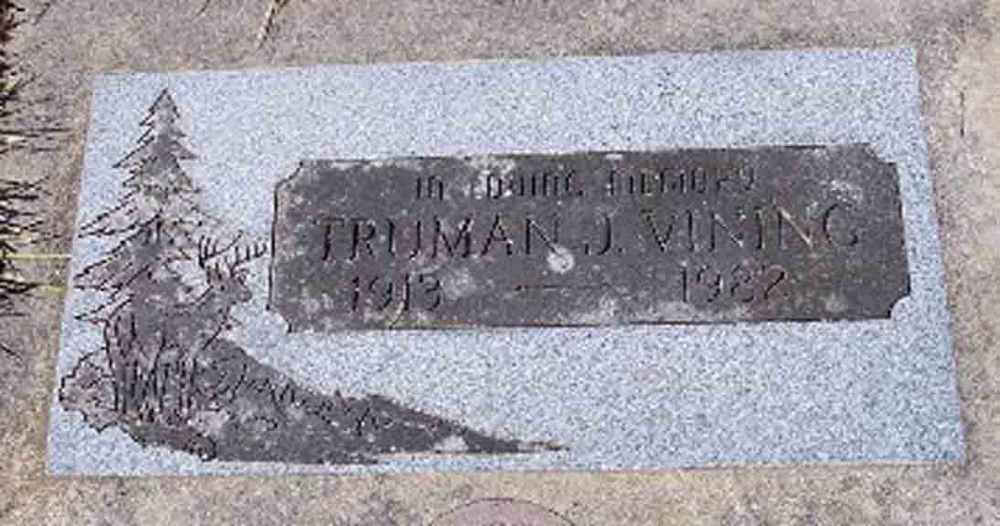
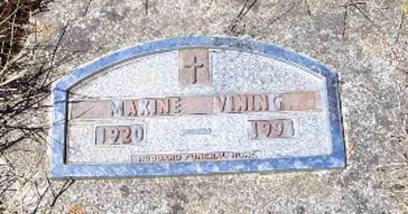
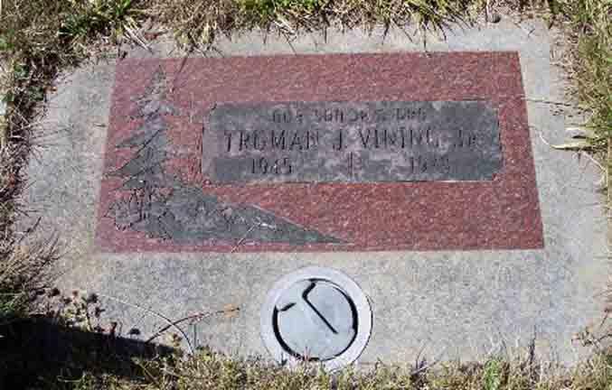

Documentation for Truman J. Vining - Maxine Evelyn Filbeck
Census Data
| |
1940 |
| Truman J. Vining |
26 |
| Maxine Evelyn Filbeck |
19 |
| Linda Darlene Vining |
|
| Larry Dale Vining |
|
| Truman J. Vining Jr. |
|
1940 Aurora, Lawrence County, Missouri. In 1940, Truman J. and Maxine were living in the household of her parents.

Death Data
Gravestones for Truman J. Vining and Maxine Evelyn (Filbeck) Vining, in Silver Lake Cemetery, Silver Lake, Cowlitz County, Washington (from Find A Grave):


Gravestone for Truman J. Vining Jr., son of Truman J. Vining and Maxine Evelyn (Filbeck) Vining, in Silver Lake Cemetery, Silver Lake, Cowlitz County, Washington (from Find A Grave):
